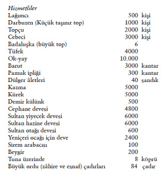

XVII. Yüzyılda Sefer Hazırlığı
Lojistik168
Sarayda pâdişaha ait at ve develere bakan hizmetliler mîrahurlar emrindedir, tümü 3390 kişidir. Yıllık maaşları 7.629.404 akça eder. Yem için ayrıca 11.960.370 akça sarfolunur.
Trakya ve Bulgaristan’dan 302.692 kile arpa ve 105.000 kantar saman gelir. Saray mutfağına verilen koyun eti yılda 991.200 okka, değeri 13,5 milyon akçadır. Yalnız yeniçeri ocağına her yıl verilen koyun eti, 2.235.719 okka olup 32 milyon akça değerindedir.
Lojistik, seferdeki bir ordu için kaynakları seferber etme, örgütleme işlevidir. Osmanlı başarılarında iyi örgütlenmiş lojistik önemli yer tutar. Osmanlılar, lojistikte devrine göre ileri bir sistem uygulamıştır. Sefer yolu üzerinde önemli kalelerde, meselâ Orta-Avrupa’ya yapılan seferlerde Belgrad’da, önceden yiyecek ve mühimmat depolanırdı. Ordunun gerisinde orduyla beraber hareket eden çeşitli esnaf, başlıca ekmek, et, pirinç satanlar, ordu-bazar adı altında kaynaklarda anılır. Ordu-bazar için bir kısım esnaf devletçe ödevlendirilirdi. I. Murad’ın Kosova’ya uzun yürüyüş halindeki ordunun et ihtiyacını, sürgün avlarıyla elde edilen binlerce av hayvanı karşılamıştır. Orta-Asya Türk-Mogollarının sürgün avını Osmanlılar bir askerî tatbikat halinde devam ettirmişlerdir. Fâtih, Kanunî ve Avcı lakabı verilen IV. Mehmed’in bu geleneği bir askerî tâlim ve eğlence olarak sık sık uyguladıklarını biliyoruz. Büyük orduların et ihtiyacı için daha sonraki dönemlerde uygulanan yöntem çok daha gelişmiştir (sürsat, celebkeş).
İstanbul’dan Macaristan’a veya Irak’a haftalarca süren yürüyüşlerde, yalnız yiyecekte değil topların, ağırlıkların naklinde, köprü inşasında, kale ve palanka inşasında her türlü ağır malzemeyi deve katarlarıyla taşırlardı (deve 250 kg kadar yük taşıdığından tercih olunuyordu). Keza Macaristan seferlerinde Tuna üzerinde seyreden ince donanma nakliye işlerinde kullanılırdı. Savaş için buğday, arpa, barut vb. seferden aylarca önce başlıca Belgrad ve Budin’de nakledilir, hazırlanırdı. Seferleri ayrıntılı biçimde anlatan menzilnâmeler, izlenen yollar ve inşaat üzerinde açık bilgi vermektedir.169

168 Sefer lojistiği için bkz. C. Finkel, Administration of the Warfare: the Ottoman Military Campaigns in Hungary, 1593-1606, Viyana, 1988, s. 173-189, tereke, buğday, pirinç ve ot için bkz. s. 190-197.
169 Sefer menzilnâmeleri için bkz. Ferîdun Bey, Münşeâtu’s-Selâtin; menziller ve posta hizmeti için bkz. C. Finkel, The Administration of Warfare, s. 121.